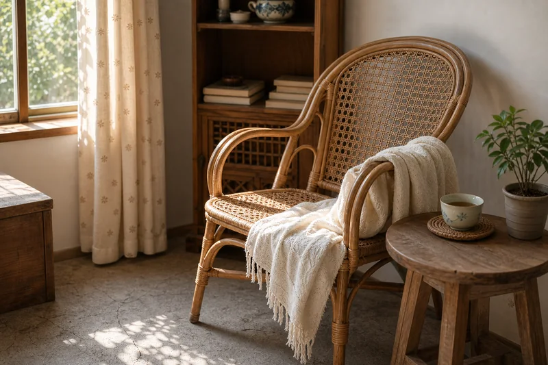

The Twenty-Minute Post-Lunch Pause: A Midday Reset Habit
My grandmother never called it a nap. If you asked her — and I did, many times, as a child who thought the word "nap" was perfectly adequate — she'd shake her head without opening her eyes. "I'm not sleeping," she'd say, in the tone of someone correcting a fundamental misunderstanding. "I'm letting the meal settle." Then she'd lean back in her rattan chair, pull a thin cotton blanket up to her chin, and close her eyes for exactly long enough that the kitchen clock ticked from one to twenty-past. When she opened them again, she was a different person — the morning's sharpness softened into something calmer, ready for the second half of the day.

Not sleep. Something else.
The distinction mattered to her. Sleep meant pajamas. Sleep meant the bedroom. Sleep meant the long dark stretch of night, the hours when the body closed for business and didn't expect to be disturbed. What happened after lunch — in the chair, with the blanket, to the sound of the clock ticking — was not sleep. It was a pause. A deliberate gap inserted between the meal and whatever came next.
I spent years trying to name this state. It wasn't napping — her eyes were closed, yes, but if you dropped a spoon in the kitchen she'd say "pick that up" without opening them. It wasn't meditation — she'd have laughed at the word. The closest translation I've found is xie shang (歇晌), a phrase that shows up in northern Chinese dialects to describe the quiet rest period after the midday meal. The first character means "rest" or "pause." The second means "noon." Together they describe exactly what my grandmother did: a pause at noon. Nothing more. Nothing less.
The shape of the pause
There were rules to this thing, though my grandmother would never have called them rules. They were more like the grooves in a well-worn path — you followed them because that's where your feet went.
The chair. Not the bed. Never the bed. The bed was for night, and mixing night-sleep with day-rest was, in her view, a recipe for waking up at three in the morning with your mind racing. The chair was a rattan armchair with a curved back and worn armrests, positioned near the window where the afternoon light came in soft and sideways. It was the only piece of furniture in the house that belonged exclusively to this ritual.
The blanket. A thin cotton cover, the kind that folds into nothing. Not for warmth — the Sichuan afternoon was rarely cold — but for weight. "The stomach needs to feel covered," she'd say. "After eating, if your middle is cold, your body can't do its work." So the blanket went over the stomach, and the rest of the body could fend for itself.
The duration. Twenty minutes, more or less. She didn't set a timer — she just knew. When I asked how she knew, she said, "You can feel when the food has stopped moving." As a child this sounded like mysticism. As an adult, after enough lunches followed by twenty minutes of quiet, I understood it as something simpler: there is a moment, somewhere between fifteen and twenty-five minutes after a meal, when the body transitions from "processing food" to "ready to move again." You can feel it if you're paying attention. She always was.
The rule about silence. During the pause, the household operated on a different frequency. If you were a child, you could read. You could draw. You could lie on the floor and stare at the ceiling. You could not run. You could not shout. You could not play the kind of games that involved things falling over. The kitchen radio was turned off. The phone — when we eventually had one — was unplugged. "The meal is settling," my grandmother would say, and that was the end of the discussion.
Schools, factories, and the institutional nap
If you grew up in China, the post-lunch pause wasn't just something your grandmother did. It was built into the structure of the day.
In primary school, after the lunch bell, there was a mandatory quiet period. Every child folded their arms on their desk and put their head down. The classroom went dark — curtains drawn, lights off — and for thirty minutes the only sound was breathing. Some kids slept. Some didn't. The point wasn't whether you actually lost consciousness. The point was that everyone stopped at the same time. The room reset.
In factories, a whistle blew at noon and again at one-thirty. The hour and a half in between belonged to lunch and rest, and rest was taken as seriously as production. In government offices, lights went off after lunch and nobody made phone calls. In shops, the metal shutter came down and the owner put their head on the counter. The entire country, for a brief window after noon, powered down. Not because anyone was lazy. Because the climate — hot summers, heavy lunches — had shaped the culture around a simple truth: you can't work well in the early afternoon. Better to rest now and be useful later than to push through and be useless all evening.
Chinese traditional thought has a name for this rhythm. The concept of zi wu jiao (子午觉) — the midnight and noon sleep — appears in classical medical texts, including the Huangdi Neijing. The idea, stripped of its cosmological language, is simple: the body has two natural low points in a twenty-four-hour cycle, one at midnight and one at noon. Resting briefly at both points aligns the body with its own rhythm. I mention this not as instruction but as cultural reference — it's the framework that generations of Chinese families used to justify a habit that probably needed no justification.
How this is different from a siesta
People sometimes compare the Chinese post-lunch pause to the Spanish siesta, and the comparison is useful but incomplete. A traditional Spanish siesta can last two or three hours. It closes businesses. It reshapes the working day. It's an institution, heavy and formalized.
The Chinese version is lighter. Shorter. Less ceremonial. In Spain, you go home and get into bed. In China, you lean back wherever you are — the office chair, the break-room bench, the driver's seat of your parked car — and you close your eyes for twenty minutes. There's no ritual around it. No cultural pride. It's just something you do, like drinking water when you're thirsty. The body asks. You comply. The day continues.
I think the Chinese version traveled better for exactly this reason. You can do a twenty-minute chair-pause in any country, in any workplace, in any life. Nobody has to restructure the economy around it. You just need a chair and the willingness to stop.
What she didn't do during the pause
My grandmother's post-lunch rules were mostly about subtraction. She didn't drink coffee — "not right after eating, let the stomach finish first." She didn't read the newspaper — "the words will swirl around with the food." She didn't answer the door. She didn't pick up the phone. She didn't plan dinner or review the shopping list or worry about anything that had happened before lunch or anything that would happen after.
"After eating, don't fuss," she'd say — chi bao le bie zhe teng (吃饱了别折腾). Four words that contained her entire philosophy of the midday. The meal was in your stomach. Your stomach knew what to do with it. Interfering — with caffeine, with stress, with motion — was not helping. It was getting in the way.
I have tried, as an adult, to follow this rule about subtraction. It is harder than it sounds. The phone is there. The inbox is there. The world is designed to fill every gap with input. But on the days when I manage it — when I eat lunch, put the phone in another room, and sit in a chair with my eyes closed for twenty minutes — I understand why my grandmother treated this pause as non-negotiable. The second half of the day starts differently when the first half had a proper ending. A light lunch helped — something like her mung bean soup, drunk standing up, finished before the pause began.
I do it now, most days
I don't own a rattan chair. My apartment doesn't have the kind of window that lets in soft afternoon light. I don't have a grandmother in the next room to enforce the silence. But most days, after lunch, I sit somewhere quiet for twenty minutes and close my eyes, and I try to let the meal settle before I ask my body to do anything else.
Some days it works. Some days I end up scrolling through my phone and the twenty minutes disappear into nothing. But on the days it works — the days when I remember the chair, remember the blanket, remember my grandmother's voice saying "don't fuss" — the afternoon feels different. Lighter. More patient. As if the morning was a separate day, now complete, and the afternoon is a fresh start.
That's the whole habit. Not a nap. Not a workout. Not a productivity hack. Just a pause. Twenty minutes of quiet after lunch, the way my grandmother did it, the way her mother did it, the way millions of people across China still do it without anyone writing it down. Until now. If she felt restless before bedtime, she'd sometimes swap the pause for a slow walk around the courtyard — a hundred paces, no more, as if walking could settle what sitting couldn't.